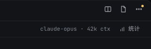
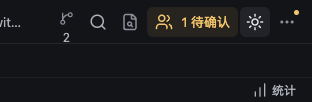
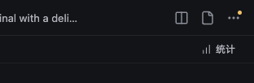
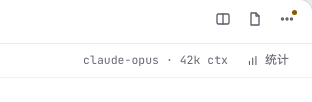
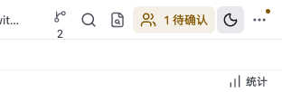
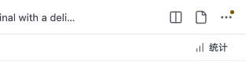

T29 · 补齐工作台右上工具区
根据用户指出的截图，对照已选定的曜石 B 稿完成实装。全部工作由资深全栈工程师2独立完成。
右上保留分屏、文件与 Git、更多三个图标入口；协作、主题、Quick Open 和 Worktree 放入更多。统计并入 34px 状态行，移除原先额外的 24px 工具条。分屏使用已有会话与布局，不重建终端。
实现与验证说明 · 批准的设计稿
暗色 · 用户指出区域的同尺度裁切
曜石 B 设计稿
修前：旧工具与单独统计条
修后：三个入口与同一状态行
亮色 · 用户指出区域的同尺度裁切
曜石 B 设计稿
修前：旧工具与单独统计条
修后：三个入口与同一状态行
设计稿中的模型和上下文为示意数据；实装保留真实会话统计。macOS 截图裁掉 20px 原生标题栏让位，使两版工具栏顶部对齐。
macOS · 实装全图、窄窗、更多、统计、分屏与 Worktree
Windows · 实装全图、窄窗、更多、统计、分屏与 Worktree